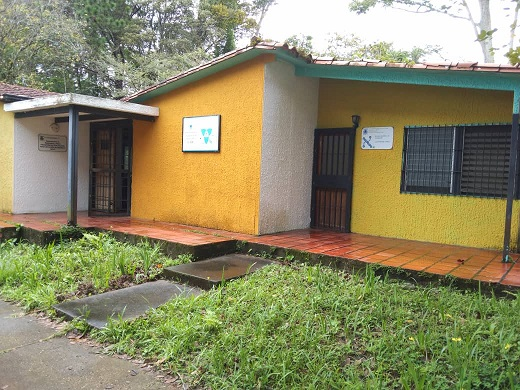

Foto Film
foto 1
INICIO
DEPARTAMENTO
NÚCLEOS
INVESTIGACIÓN
ACADEMIA
EVENTOS
Contenidos
»Dpto. de Matemática y Física
Horario Preparadores del Departamento de Matemática y Física
Hora
8:00am a 9:00am 9:00am a 10:00am
10:00am a 11:00m 11:00am a 12:00m
Lunes
Matemática Disc. Victoria Ballesteros
Matemática I. Juan Diego P.
Martes
Estadistica I. Javier Chacón
Matemática I.
Miércoles
Matemática I. Guillermo Z.
Matemática I. Gustavo Morillo
Jueves
Fisica I. Ángel Vivas
Fisica II. Hernaldo Pérez
Viernes
Matemática I. Fabián Ramírez
Matemática IV. Luis Samuel Salazar
Matemática Discreta
Aula 27A. Edificio A. Jordano Pernía.(Martes, 10:30 a 12:30).
Física I.
Aula 15B. Edificio B. Oriana Moreno.(Lunes, 8:00 a 10:00).
Matemática II.
Aula 14B. Edificio B. Lubely Camargo.(Jueves, 10:30 a 12:30).
Matemática II.
Aula 27A. Edificio A. Enmanuel Pérez.(Viernes, 8:00 a 10:00).
Métodos numéricos.
Edificio C, piso 3, salón frente a Postgrado. Kevin Zambrano (Lunes, 8:00 a 10:00).
Lugar: Departamento de matemática y Física,
Centro de Enseñanza y Divulgación de la Ciencia (CEDIC).
